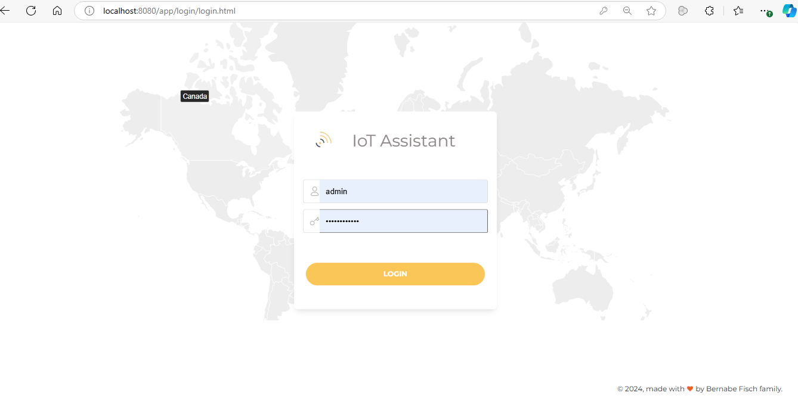
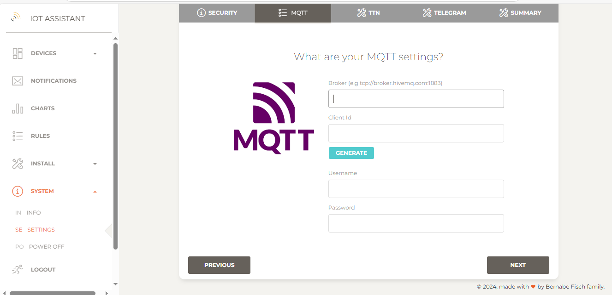
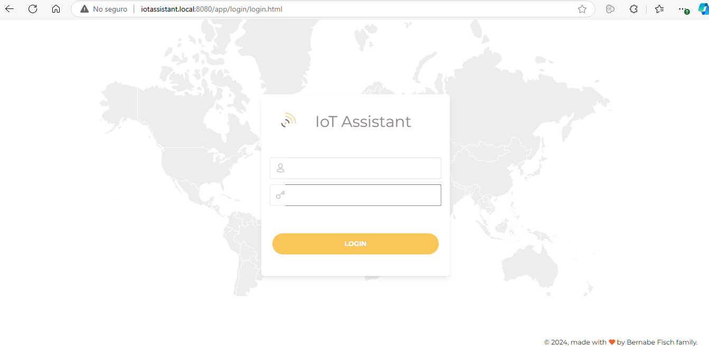
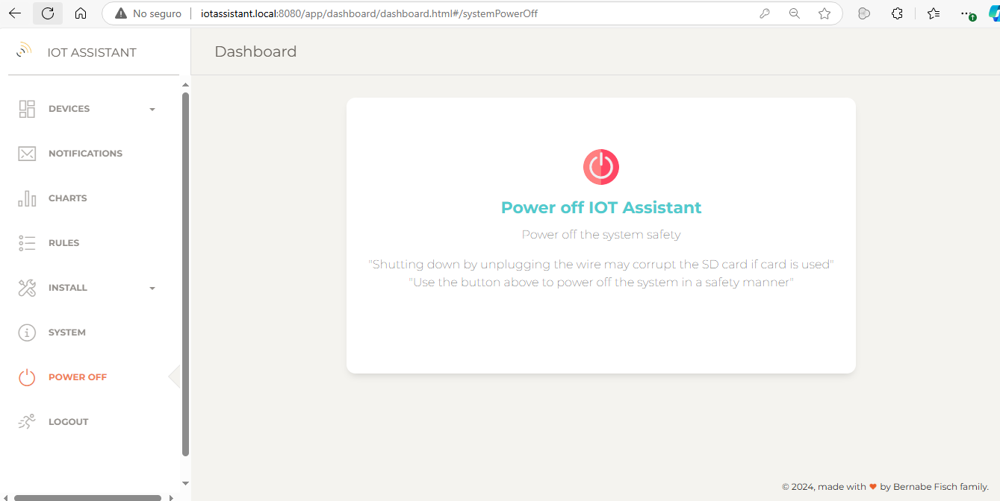

Running IoT Assistant
Running it on a computer
To run IoT Assistant, simply execute the provided .jar file by double-clicking it or using this command:
# java -jar iot-assistant-0.1.0.jar
Depending on your Java version, you may need to use this command instead:
# java --add-opens java.base/java.lang=ALL-UNNAMED --add-opens java.base/java.lang.invoke=ALL-UNNAMED -jar iot-assistant-0.1.0.jar
Once running, access the login page at http://localhost:8080 with the default credentials username: admin password: iotassistant
{kind=link}
After logging in, go to System > Settings to configure notifications and connect to your devices.
{kind=link}
Running it on a Raspberry Pi Zero W
I run IoT Assistant on a Raspberry Pi Zero W. Here are the instructions:
1 - Get a SD card of at least 8GB
2 - Install Raspberry Pi OS (Raspbian) on the SD card using the Raspberry Pi imager
4 - Power on the Raspberry pi with the SD card inserted
5 - During the first boot, complete the initial Raspbian setup (Wi-Fi, location, language...).
6 - Open a terminal and install JRE:
# sudo apt install openjdk-8-jre
7 - Increase the swap memory to prevent Raspbian from freezing:
# sudo mousepad /etc/dphys-swapfile --> Set CONF_SWAPSIZE=2048
8 - Enable VNC in Raspbian to transfer iotassistant.jar to the Raspberry Pi by clicking the logo, then Preferences, and Raspberry Pi Configuration.
9 - Connect to the Rasbperry Pi (using e.g VNC viewer) and copy iotassistant.jar to the home folder. To get Raspberry pi location you can use Pi finder or use the given domain name during the initial setup
10 - Make IoT Assistant run automatically at boot:
# crontab -e
# @reboot java -jar $HOME/iot-assistant-0.1.0.jar
Depending on the Java version you may need to use this command instead:
# @reboot java --add-opens java.base/java.lang=ALL-UNNAMED --add-opens java.base/java.lang.invoke=ALL-UNNAMED -jar iot-assistant-0.1.0.jar
11 - Now, you can connect to IoT Assistant from any local device using the Raspberry Pi's domain name.
{kind=link}
12 - Once logged in click on System > Settings to configure IoT Assistant instance to receive Telegram notifications and connect to your devices.
To avoid corrupting the SD card or the IoT Assistant database, always use the power off option from the IoT Assistant application when shutting down the system, instead of turning off the power supply directly.
{kind=link}